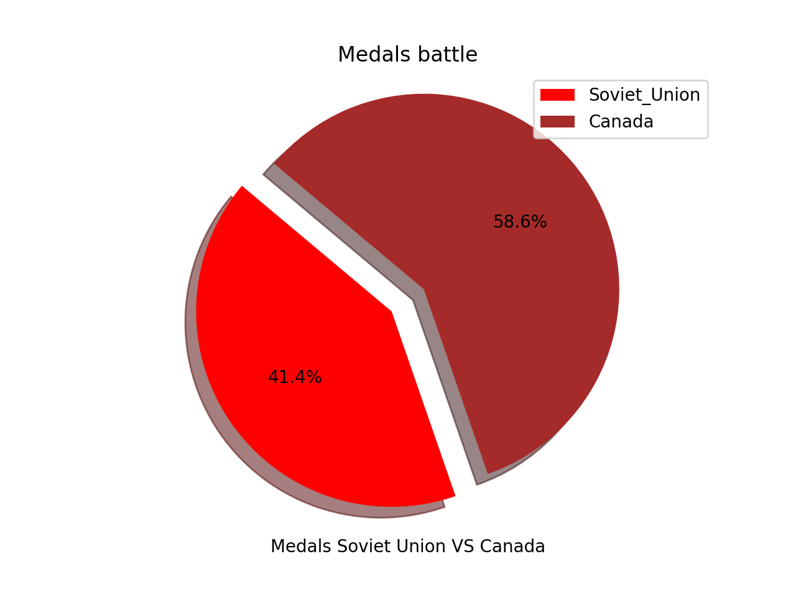
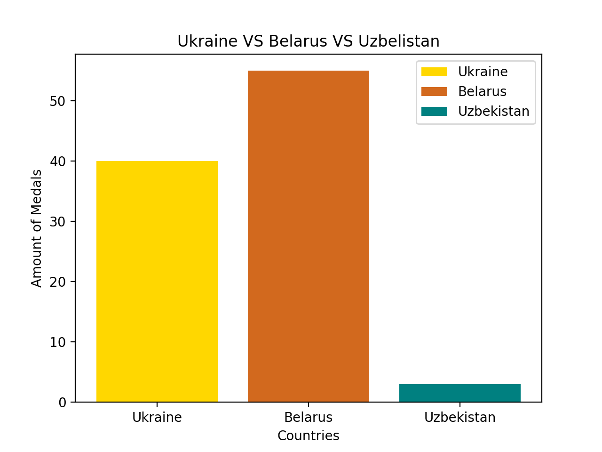
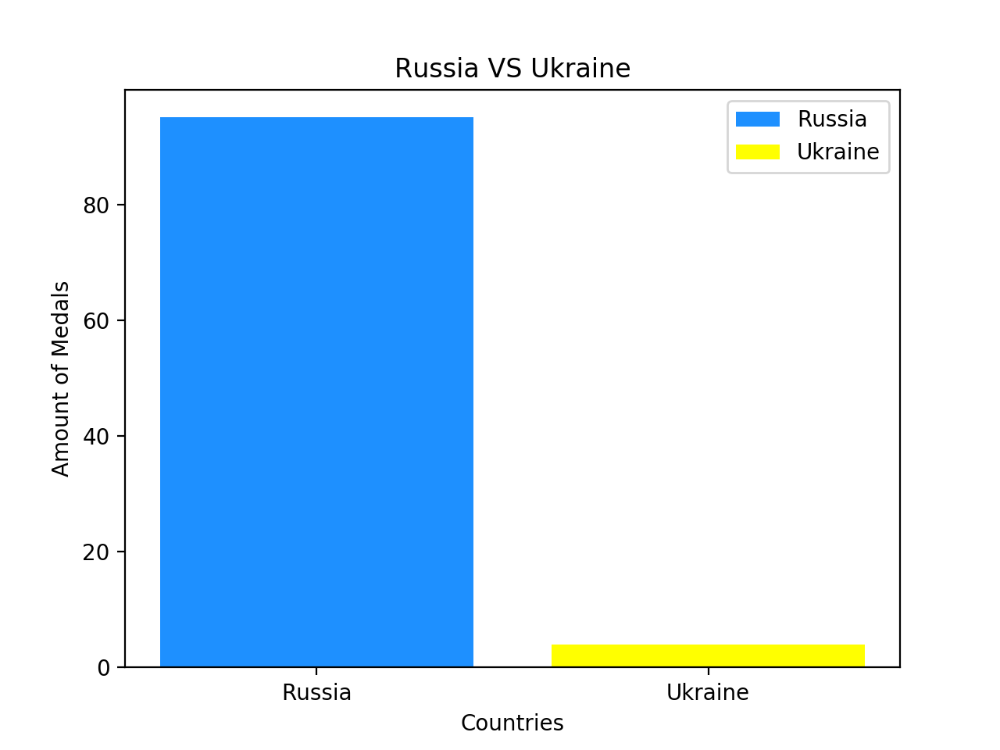
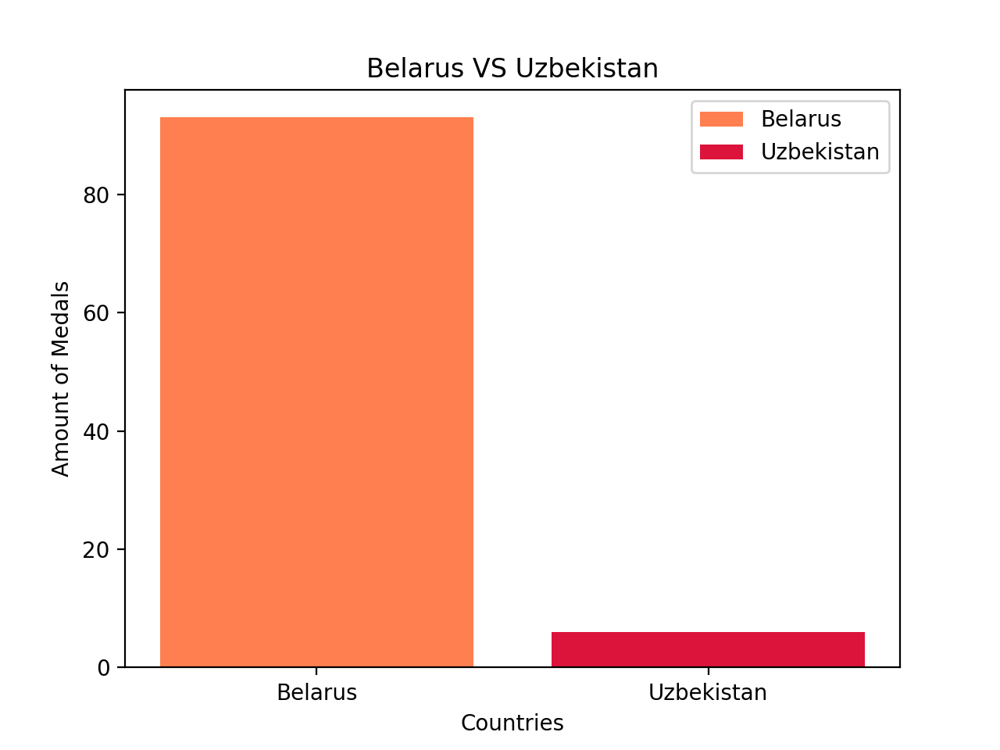

In Soviet times, participation in the Olympic games was considered very prestigious as it was a closed country. Therefore, everyone wanted to see the world and show their strength.
After analyzing the statistical data on the winter Olympic games, we can conclude that in the USSR people who won medals were men.
Also, we wanted to compare the Canadian medalists with the Soviet one. The graph shows that Canadian medalists are more successful.
In the past, a certain number of countries were part of the Soviet Union. We decided to consider four countries that have ever won medals in the winter Olympic games.
In this graph we tried to show a number of medals and how many won each country.
As we can see in a first graph Russia won the most medals compared to the other tree countries. For a better understanding of the number of medals were won in the other three countries, see the next chart.
This part is going to show a comparison between four countries which were part of the Soviet Union many times ago.
First on is Belarus and Ukraine:
Next one is Russia and Ukraine:
The last one is Uzbekistan and Belarus:
